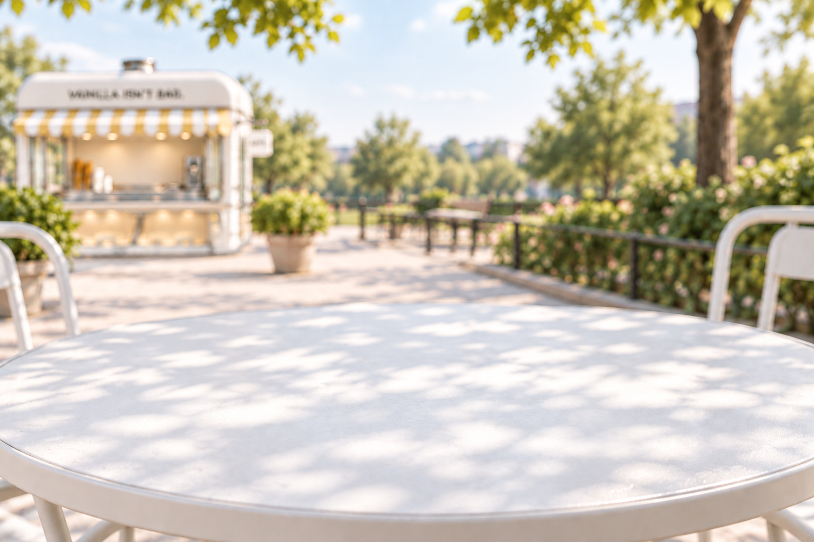

Skip to the apps

←
Back to the shop
All apps
＋
EN
/
JA
All flavors.
←
→
Your choice
Back to the table
×
A few simple things
Open app
↗
All apps
×
Sample apps for this preview.
アプリを選ぶにはJavaScriptを有効にしてください。